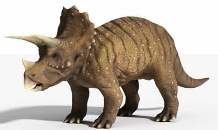
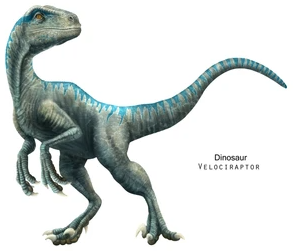
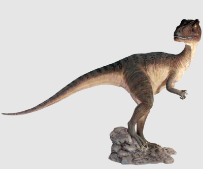

Este género de dinosaurios ceratopsianos vivió a finales del período Cretácico, hace alrededor de 66 a 68 millones de años, en lo que hoy es Norteamérica.
Este pequeño cazador,vivió a finales del Jurásico, hace entre 164 y 145 millones de años
Es un género de dinosaurio terópodo carnívoro que vivió hace 155 a 150 millones de años
